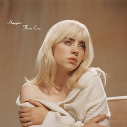

2015–2017: Don't Smile at Me
Pada tahun 2015, Eilish yang pada saat itu berusia 13 tahun mulai mengerjakan lagu bersama dengan saudara laki-lakinya, yaitu Finneas, yang telah menulis dan memproduseri selama beberapa tahun dan memiliki band sendiri. Lagu pertama yang mereka rekam bersama berjudul "She's Broken" dan "Fingers Crossed", yang pertama ditulis oleh Finneas dan yang terakhir oleh Eilish. “Kami merekamnya dan menaruhnya di SoundCloud, hanya untuk bersenang-senang,” kenangnya.
Pada tanggal 18 November 2015, Eilish merilis lagu "Ocean Eyes". Lagu ini ditulis, dicampur, dan diproduksi oleh Finneas, yang pada awalnya menciptakannya untuk bandnya the Slightlys, sebelum memutuskan bahwa lagu itu lebih cocok untuk vokal Eilish. Dia memberikannya kepada Eilish ketika guru tarinya di Revolution Dance Center meminta mereka untuk menulis lagu untuk koreografi. Kakak beradik itu mengunggah lagu tersebut ke SoundCloud, di mana Diaz dapat mengakses dan mengunduhnya. Lagu tersebut didengarkan beberapa ratus ribu dalam dua minggu, dan manajer Finneas, yaitu Danny Rukasin, menghubunginya untuk mendiskusikan potensi Eilish. Rukasin merasa bahwa dia bisa mencapai kesuksesan yang signifikan dengan bantuan dari Finneas.
Pada bulan Januari 2016, Finneas dan manajernya membuat kesepakatan di mana Apple Music mengontrak Eilish ke perusahaan A&R Platoon, yang mengkhususkan diri dalam mengemas artis-artis baru sebelum mereka mendapatkan kontrak label besar. Eilish kemudian mendapatkan seorang humas, yang menghubungkannya dengan sebuah merek fesyen mewah, yaitu Chanel, dan seorang penata gaya, yang keduanya membantu untuk membentuk citranya. Pada tanggal 24 Maret 2016, video musik "Ocean Eyes" yang disutradarai oleh Megan Thompson ditayangkan perdana di saluran YouTube resmi Eilish. "Ocean Eyes" dan Eilish kemudian menerima pujian dan promosi dari berbagai media dan pemasar, termasuk stasiun radio dan pengawas musik, seperti Beats 1, KCRW, BBC Radio 1, Zane Lowe, Jason Kramer, Annie Mac, dan Chris Douridas.
Pada tanggal 23 Juni 2016, Eilish dan Finneas merilis "Six Feet Under" melalui SoundCloud sebagai single keduanya. Video musik buatan sendiri untuk lagu tersebut dirilis pada tanggal 30 Juni 2016. Video musik ini disutradarai oleh Eilish dan diedit oleh ibunya, yaitu Maggie Baird.
Pada bulan Agustus 2016, Justin Lubliner, yang telah menyadari bakat Eilish pada tahun 2015 ketika dia pertama kali mendengarkan lagu yang berjudul "Ocean Eyes", mengontraknya ke Darkroom dan Interscope Records. Dia mengembangkan popularitasnya sebagai seorang artis, mengambil inspirasi dari model artis hip hop, seperti Travis Scott dan Chance the Rapper, tidak mengandalkan satu single besar saja, dan fokus pada menciptakan "persona dan estetika yang berbeda.". Darkroom dan Interscope Records merilis ulang "Six Feet Under" dan "Ocean Eyes" sebagai single untuk unduhan digital dan streaming masing-masing pada tanggal 17 dan 18 November 2016. Pada tanggal 22 November 2016, video musik pertunjukan tari untuk "Ocean Eyes" diunggah ke saluran YouTube Eilish.
Pada tanggal 14 Januari 2017, Eilish merilis EP dengan empat remix oleh Astronomyy, Blackbear, Goldhouse, dan Coutious Clay untuk "Ocean Eyes", dan merilis EP lain untuk "Six Feet Under" yang menampilkan remix oleh Blu J, Gazzo, Jerry Folk, dan Aire Atlantica. Menyusul kesuksesan remix "Ocean Eyes", Eilish merilis "Bellyache" pada tanggal 24 Februari 2017, Video musik untuk lagu tersebut dirilis pada tanggal 22 Maret 2017, dan disutradarai oleh Miles dan AJ. Eilish kemudian merilis "Bored" pada tanggal 30 Maret 2017, sebagai bagian dari soundtrack serial Netflix 13 Reasons Why. Video musik untuk "Bored" kemudian dirilis pada tanggal 26 Juni 2017. Pada bulan Maret di tahun yang sama, Apple Music menampilkan Eilish di festival musik South by Southwest. Pada tanggal 30 Juni 2017, Eilish merilis "Watch". Eilish kemudian merilis single lain, "Copycat", yang dirilis pada tanggal 14 Juli 2017, dan mengumumkan perilisan EP debutnya, Don't Smile at Me. Eilish kemudian merilis "Idontwannabeyouanymore" dan "My Boy". Pada tanggal 11 Agustus 2017, Eilish merilis Don't Smile at Me. EP ini menjadi hit, mencapai nomor 14 di Billboard 200 di AS. Eilish memulai Tur Don't Smile at Me sepanjang bulan Oktober 2017 untuk mendukung EP-nya. Eilish merilis "Bitches Broken Hearts" melalui SoundCloud pada tanggal 10 November 2017.
Tim Eilish bekerja dengan Spotify, yang mempromosikannya di playlist terpopulernya, "Today's Top Hits". The Baffler menggambarkan suara Eilish cocok dengan genre "streambait" yang sebagian besar terdiri dari "pop melankolis bertempo menengah" yang dipengaruhi oleh Lana Del Rey, yang "gaya menyanyi, kesuraman, dan ... produksi yang dipengaruhi hip-hop" membentuk estetika. Kesuksesan komersial Eilish meluas dengan promosi Spotify-nya. Pada bulan September 2017, Apple Music menunjuk Eilish sebagai artis Up Next mereka, yang diikuti dengan film dokumenter pendek, EP sesi live, dan wawancara dengan Zane Lowe di stasiun radio Apple Music Beats 1. Bulan itu, EP live berjudul Up Next Session: Billie Eilish dirilis. Pada tanggal 15 Desember 2017, Eilish merilis kolaborasinya dengan seorang rapper asal Amerika Serikat, yaitu Vince Staples, bertajuk "&Burn", yang merupakan remix dari single yang dirilis sebelumnya "Watch". Singel itu kemudian dimasukkan dalam edisi Don't Smile at Me yang diperluas.